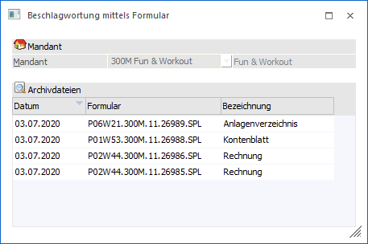
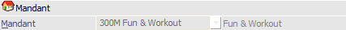
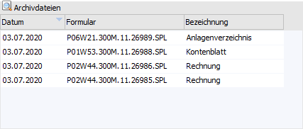
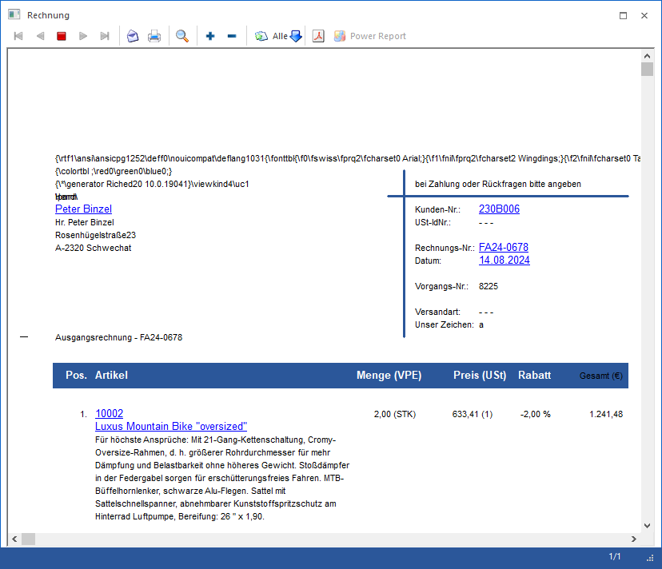
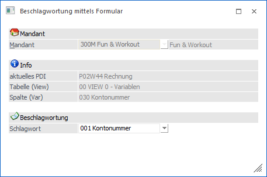
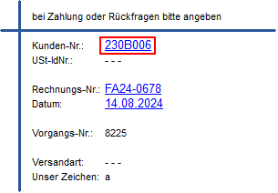
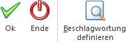

Es muss zuerst ein Formular dem WinLine Archiv hinzugefügt werden, wobei keine Archivanalyse stattgefunden haben darf. Anschließend wird der Inhalt des Formulars am Bildschirm ausgegeben und durch Anwahl von Informationen eine Verknüpfung zu Schlagwörter hergestellt. Dieser Vorgange finden im Programm Beschlagwortung mittels Formular statt und kann auch für Formulare vorgenommen werden, welche bereits "beschlagwortete" wurden.
Damit die Beschlagwortung von Formularen über den Menüpunkt…
1 WinLine ADMIN
1 Archiv
1 Beschlagwortung
1 Beschlagwortung mittels Formular
… stattfinden kann, muss zuerst ein Formular dem WinLine Archiv hinzugefügt werden (per Druck in der WinLine bei aktivierten Archiv), wobei keine Archivanalyse stattgefunden haben darf.

Mandant

Ø Mandant
Aus der Auswahlliste kann der Mandant ausgewählt werden, für welchen ein Formular bearbeitet werden soll. Nach Bestätigung der Auswahl wird die Tabelle gefüllt und der Mandant kann nicht mehr geändert werden.
Tabelle "Archivdateien"

Nach der Bestätigung des Mandanten werden in der Tabelle alle Dokumente des Mandanten angezeigt, die noch nicht analysiert wurden. Diese Dokumente sind zu diesem Zeitpunkt auch noch im Archiv-Pfad der WinLine Installation ersichtlich.
Ø Datum
Das Datum der Ausgabe (Formularerstellung) wird angezeigt.
Ø Formular
Es wird der Name der Spool-Datei angezeigt, die beim Ausdruck erzeugt wurden.
Ø Bezeichnung
Hier ist die Bezeichnung des Formulars ersichtlich.
Beschlagwortung
Wenn ein Formular bearbeitet werden soll, so muss dieser Eintrag in der Tabelle markiert werden. Durch einen Doppelklick auf diesen markierten Eintrag oder durch Anklicken des Buttons "Beschlagwortung definieren" wird das gespeicherte Formular geöffnet, wobei das Formular so dargestellt wird, wie es auch am Bildschirm gedruckt worden wäre.

Wenn sich in dieser Druckvorschau Elemente befinden, die blau und unterstrichen dargestellt werden, so bedeutet das, dass diese Elemente bereits beschlagwortet wurden und somit auch archiviert werden.
Wie können neue Elemente beschlagwortet werden?
Zuerst ist darauf achten, dass nur Variablen beschlagwortet werden können. Texte oder Variablen in Verbindung mit Texten können nicht archiviert werden. Der Unterschied ist erkennbar, indem man den Mauszeiger über den gewünschten Eintrag zieht:
ü Der Mauszeiger ändert sich in eine
Hand
In diesem Fall handelt es sich um eine "richtige" Variable, die auch
beschlagwortet werden kann.
ü Der Mauszeiger ändert sich
nicht
In diesem Fall handelt es sich nur um einen Text oder um eine
Kombination aus Variable und Text und kann deshalb nicht beschlagwortet
werden.
Wenn sich der Mauszeiger in eine Hand wandelt, dann kann dieser Eintrag auch angeklickt werden. Durch Anklicken des gewünschten Eintrages ändert sich das Fenster "Beschlagwortung mittels Formular":

Jetzt werden folgende Informationen angezeigt:
Ø aktuelles PDI
Hier ist ersichtlich, welches Formular gerade bearbeitet wird.
Ø Tabelle (View) / Spalte (Var)
Es wird angezeigt, welche Variable ausgewählt wurde.
Ø Beschlagwortung
Aus der Auswahlliste kann die gewünschte Beschlagwortung ausgewählt werden.
Durch Anklicken des Buttons "Ok" bzw. der Taste F5 wird der Eintrag gespeichert. Im Anschluss wird die so beschlagwortete Variable blau und unterstrichen dargestellt.

Hinweise
Wenn eine Variable aus dem Mittelteil beschlagwortet wurde, so werden auch alle Mittelteilszeilen, die diese Variable enthalten, ebenfalls so dargestellt.
Dieser Vorgang kann beliebig oft wiederholt werden.
Wenn ein bereits beschlagworteter Eintrag angeklickt wird, dann kann die Beschlagwortung geändert werden, indem aus der Auswahlliste ein anderer Eintrag gewählt wird.
Buttons

Ø Ok
Durch Anwahl des Buttons "Ok" bzw. der Taste F5 wird die Beschlagwortung direkt gespeichert. D.h. ein Speicherungsvorgang über "alle" Beschlagwortungen ist nicht notwendig!
Ø Ende
Durch Anwahl des Buttons "Ende" bzw. der Taste ESC wird das Fenster geschlossen.
Ø Beschlagwortung definieren
Es wird die Druckvorschau für das ausgewählte Formular geöffnet. In dieser kann die Beschlagwortung vorgenommen werden.